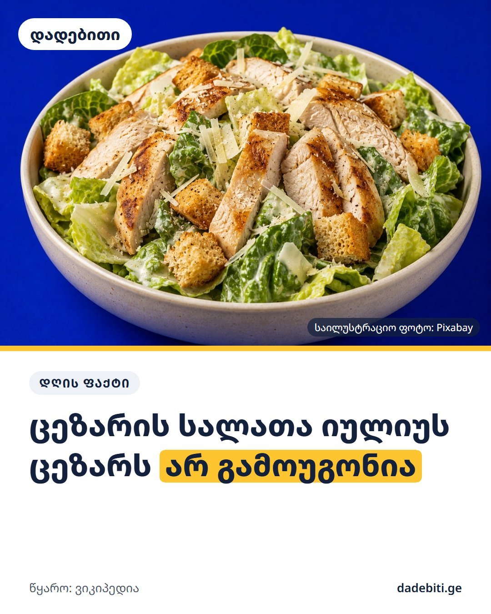

ცეზარის სალათა იულიუს ცეზარს არ გამოუგონია

ცეზარის სალათა იულიუს ცეზარის სახელს უკავშირდება, მაგრამ მას არ გამოუგონია. მისი შემქმნელი იყო ცეზარ კარდინი, იტალიურ-ამერიკელი რესტორნის მფლობელი. სალათა 1924 წელს მექსიკაში, ტიხუანაში შეიქმნა. ამიტომ წარმოდგენა, რომ ეს კერძი იულიუს ცეზარმა მოიფიქრა, სიმართლეს არ შეესაბამება. წყარო ცალსახად ამბობს, რომ სალათის ავტორი ცეზარ კარდინია და არა იულიუს ცეზარი.
წყარო: ვიკიპედია · ორიგინალი ამბავი